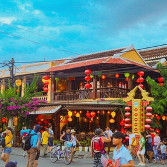
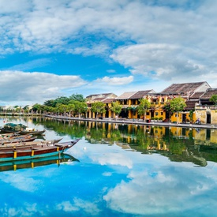
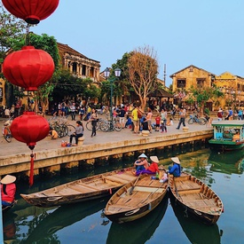

Hoi An Among 10 Best Pedestrian Destinations In The World

Hoi An Ancient Town in Central Vietnam has recently been ranked as one of
the
10 best car-free destinations in the world for American travelers to visit by the US magazine National
Geographic (NatGeo).
Danang And Hoi An To Host Hot-Air Balloon Festival
Danang City and Hoi An Ancient Town are going to hold a fascinating hot-air
balloon festival on Saturday, March 27th alongside the welcoming of the first international flights to the
city post-Covid-19 pandemic after two years of closure.
Hoi An Is Listed Among The Most Romantic Destinations For Valentine In The
World

Hoi An is shortlisted among 21 world's most romantic places for couples to
travel on Valentine's Day by Time Out, a famous magazine based in the UK.
Hoi An Wins Asia's Leading Cultural Destination At World Travel Awards

At World Travel Awards 2021 (WTA), Hoi An has surpassed many competitors
including Beijing, Seoul, Kyoto, and Hue to be the winner of Asia's leading cultural city destination.